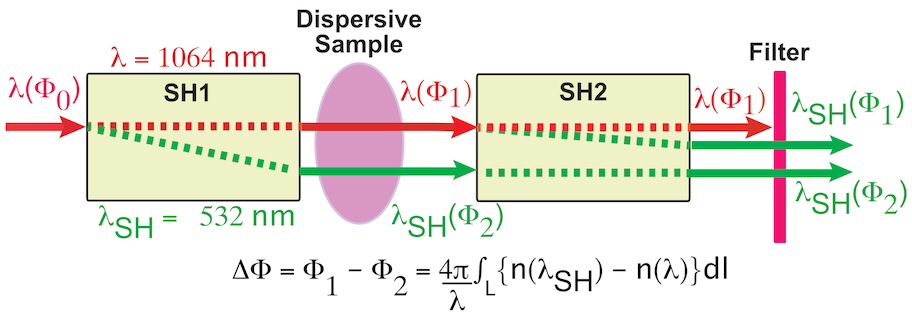
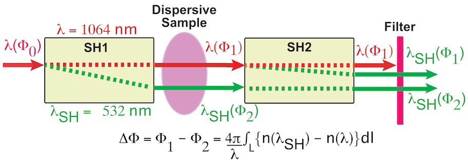
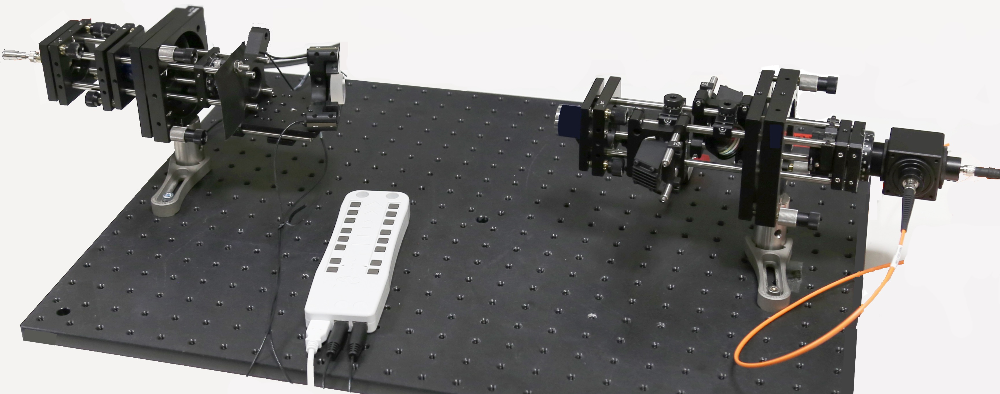
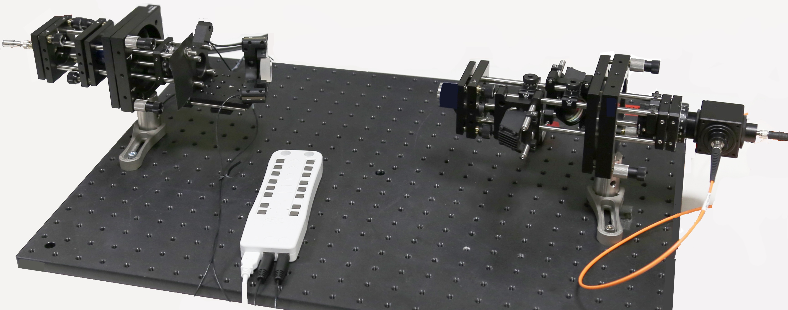

Density Diagnostic for Plasma and Neutral Gas
Second-Harmonic Dispersion-Interferometer (SHDI)
A simplified diagram of the SHDI is shown in the Figure,
which uses a single laser beam source, providing for a common-mode beam path and homodyne detection.
Unlike a conventional two-arm, density-measuring interferometer, the SHDI is more stable,
less complex, and lower cost.
Ultimately, the lower limit of sensitivity of the SHDI depends on the thickness and index of refraction
of the sample.
To date, SHDI's have been used primarily for the measurement of neutral gas
density and the electron density in plasma. Nevertheless, most transparent-dispersive
mediums can be sampled and measured, including liquids and solids.

The SHDI instrument is currently available in two configurations for:
1-Dimensional, line-of-sight
measurements and for 2-Dimensional, transverse-imaging measurements.
Photos of the 1D- and 2D-SHDIs are shown below.
The principal characteristics of these SHDIs are as follows:
- Vibration isolation systems are typically unnecessary.
- The two compact optical units may be mounted directly on the experiment.
- The instrument can measure large, and small sample sizes, from mm's - m's .
- The system is designed for the application, in order to keep cost low.
- The time resolution can range from Δt ~ ns - seconds.
- The phase resolution can range from, ΔΦ ~ 10-2 - radians.
- Bandwidth and sensitivity can be tailored for measurements.
- As a 2-D instrument, the SHDI can sample mm2 – cm2 areas.
- The recording rate can approach 100's fps.
- Large sample gradients, beam deflections, and fringe jumps may limit the spatial resolution.
- User-friendly software provides for quick-image visualization and data analysis.

The SHDI instrument is currently available in two configurations for:
1-Dimensional, line-of-sight measurements and for 2-Dimensional, transverse-imaging measurements.
Photos of the 1D- and 2D-SHDIs are shown below. The principal characteristics of these SHDIs are as follows:
- Vibration isolation systems are typically unnecessary.
- The two compact optical units may be mounted directly on the experiment.
- The instrument can measure large, and small sample sizes, from mm's - m's .
- The system is designed for the application, in order to keep cost low.
- The time resolution can range from Δt ~ ns - seconds.
- The phase resolution can range from, ΔΦ ~ 10-2 - radians.
- Bandwidth and sensitivity can be tailored for measurements.
- As a 2-D instrument, the SHDI can sample mm2 – cm2 areas.
- The recording rate can approach 100's fps.
- Large sample gradients, beam deflections, and fringe jumps may limit the spatial resolution.
- User-friendly software provides for quick-image visualization and data analysis.
Downloads: SHDI Brochure
1-Dimensional, Second Harmonic Dispersion Interferometer

Length Optical Unit1: 150 mm
Length Optical Unit2: 150 mm
Total Width: 80 mm
Bandwidth: ≤ 1 MHz
Electron Density: ∫ nexdl ≥ 1014 cm-2
Neutral Density: ∫ n0xdl ≥ 1017 cm-2
2-Dimensional, Second Harmonic Dispersion Interferometer
Length OU1: 400 mm
Length OU2: 500 mm
Total Width: 80 mm
Pulse Width: 1 ns
Sampling Rate: 100 fps
∫ nexdl ≥ 1014 cm-2
∫ n0xdl ≥ 1017 cm-2

1-Dimensional, Second Harmonic Dispersion Interferometer

Length Optical Unit1: 150 mm
Length Optical Unit2: 150 mm
Total Width: 80 mm
Bandwidth: ≤ 1 MHz
Electron Density: ∫ nexdl ≥ 1014 cm-2
Neutral Density: ∫ n0xdl ≥ 1017 cm-2
2-Dimensional, Second Harmonic Dispersion Interferometer
Length OU1: 400 mm
Length OU2: 500 mm
Total Width: 80 mm
Pulse Width: 1 ns
Sampling Rate: 100 fps
∫ nexdl ≥ 1014 cm-2
∫ n0xdl ≥ 1017 cm-2